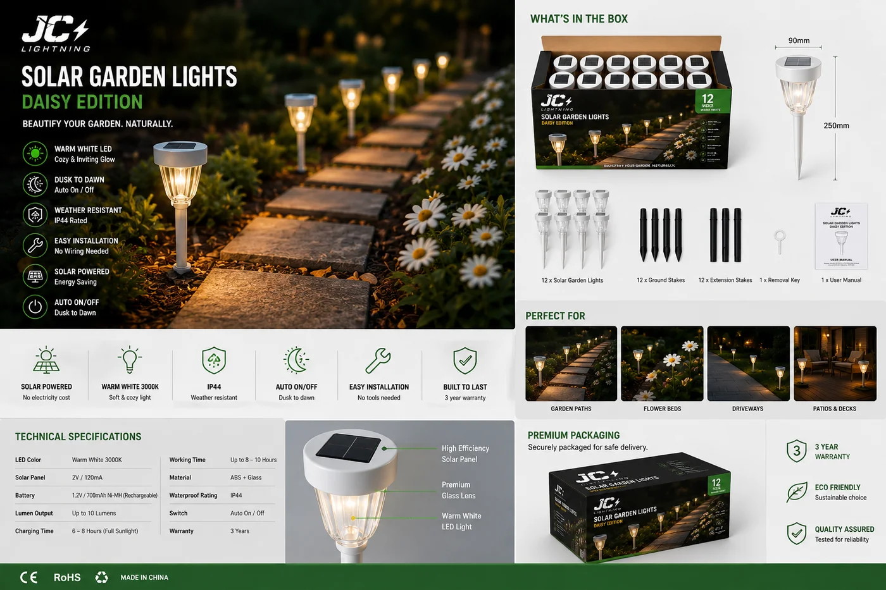

太阳能花园地插灯 · 8 件装
用于花园与步道的零售装地插灯——磨砂玻璃漫射罩配耐用 ABS,IP65,8 件装与 12 件装消费盒,上架即售。

这是花园系列的走量主力——能铺满零售端架的产品。磨砂玻璃柔化沿步道或花境的光,ABS 结构经得起季节更替,8 件装/12 件装消费盒专为货架与电商销售设计。对服务 DIY、五金和园艺中心渠道的经销商,这是常补货的 SKU。
规格参数
| 功率 | 每盏 1.2W |
|---|---|
| 材质 | 磨砂玻璃罩 + ABS 灯体 |
| IP 防护等级 | IP65 |
| 电池 | 600mAh |
| 续航时间 | 每次充电 8 小时 |
| 包装 | 8 件装与 12 件装零售盒 |
| 认证 | CE + RoHS |
| 定制 | OEM / ODM——包装、品牌 |
为什么选它
零售即售包装。8 件装与 12 件装消费盒可直接上架或电商出售——无需二次包装。
磨砂玻璃质感。同价位下比裸塑料地插灯更柔和、更高端的光。
走量 SKU。支撑季节性产品线的快速补货花园主力。
已认证、支持 OEM。每份报价附 CE + RoHS;可定制包装与品牌。
为这些市场而建澳大利亚、西班牙、拉美等地的 DIY、五金与园艺中心零售——走量的消费级花园灯。